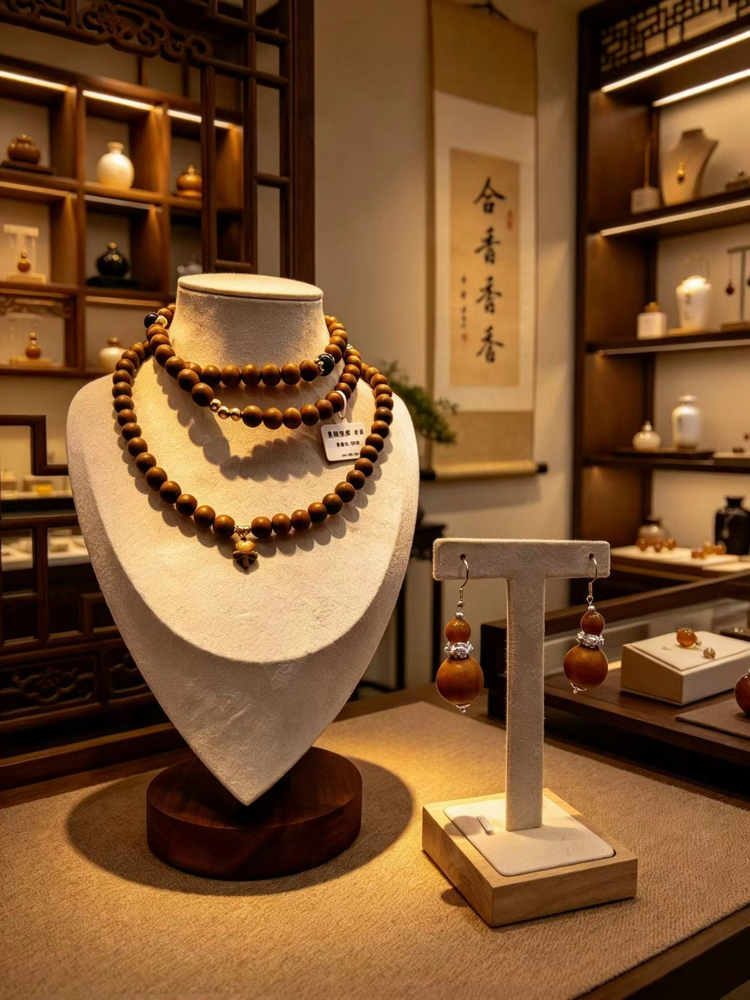
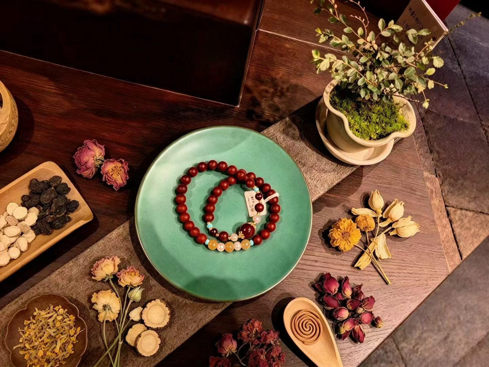
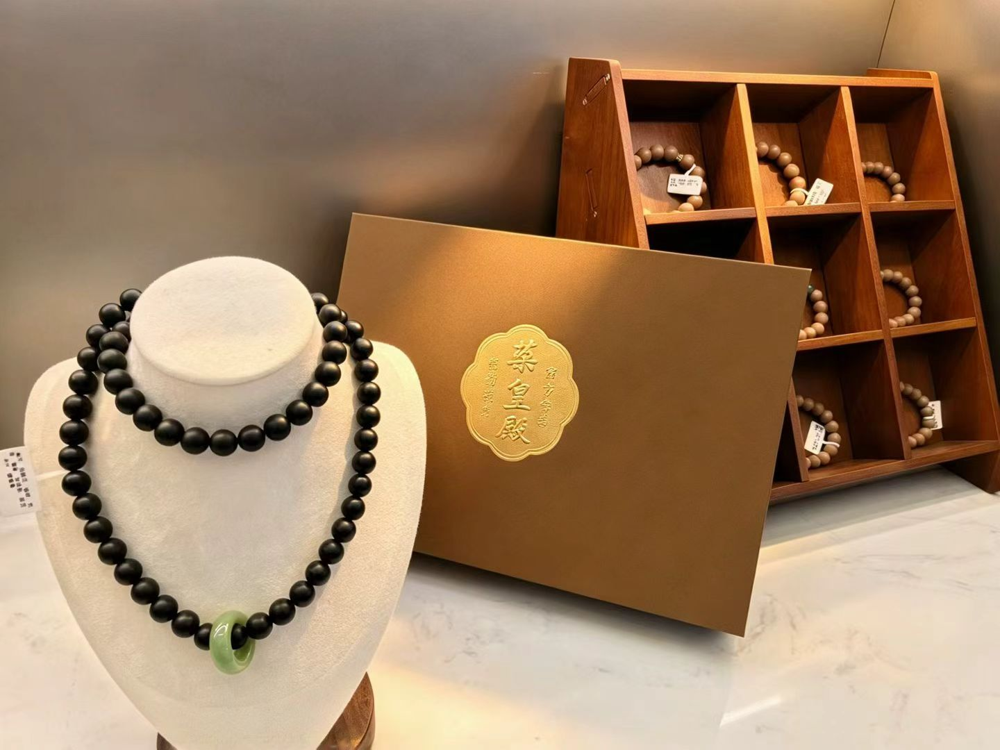
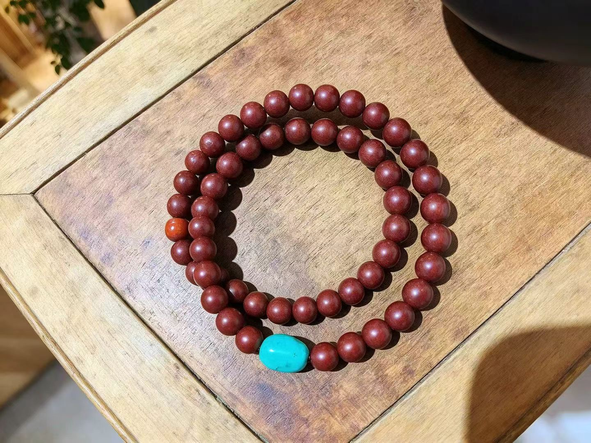
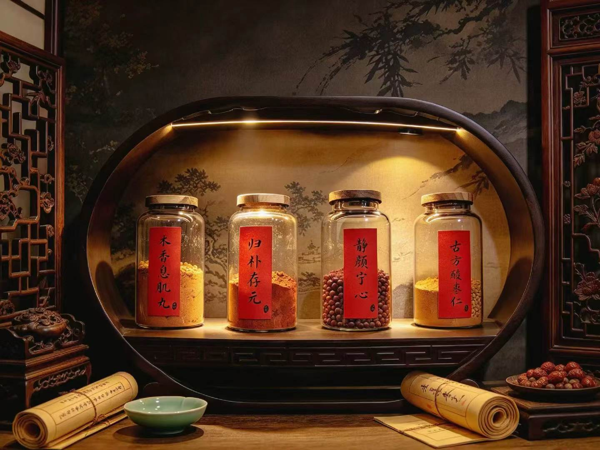
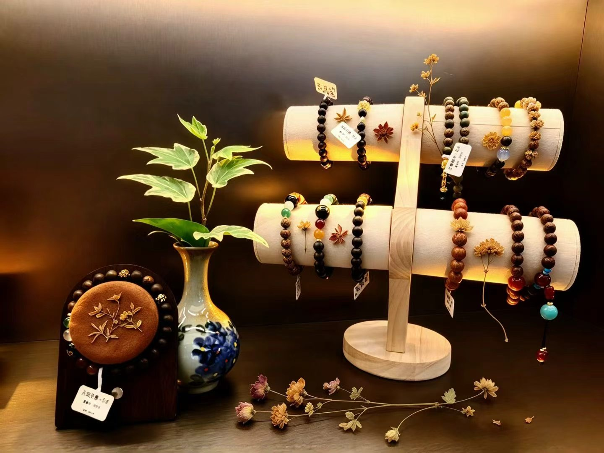
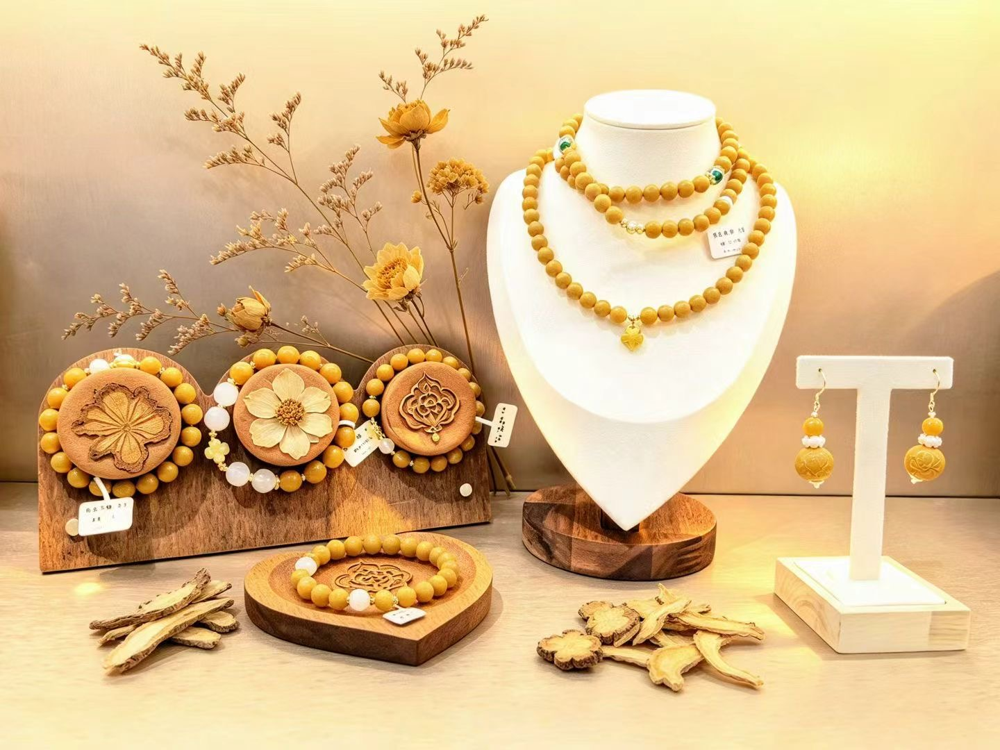
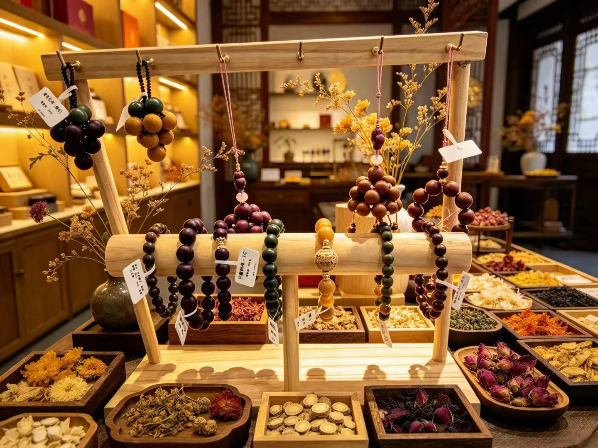

MATERIAL STUDY 01
Agarwood
Learn how agarwood forms, why its scent and appearance can vary, and its role in incense and material culture. Specific product identification requires supplier or expert confirmation.
Explore the stories behind agarwood, sandalwood, traditional Chinese herbal knowledge, and the small rituals that invite us to slow down.
Explore the materials
A bracelet can be a starting point for exploring botanical origins, texture, craftsmanship, and cultural meaning. The exact material of each pictured piece is being verified before individual claims are made.

Learn how agarwood forms, why its scent and appearance can vary, and its role in incense and material culture. Specific product identification requires supplier or expert confirmation.

Explore the botanical origins and distinctive aromatic profile associated with sandalwood, alongside questions of sourcing and responsible identification.

Discover how natural substances appear in Chinese materia medica and how historical descriptions differ from modern scientific evidence.
Note: these photographs show the collection and its presentation. They do not independently verify the species, composition, or authenticity of individual materials.
Classical Chinese materia medica records historical observations, classifications, and beliefs about natural substances. Reading these texts today means asking what they say, when they were written, and how their claims compare with modern evidence.
This project will use reliable references and distinguish cultural history from claims about health effects.

Some people use beads as a tactile focus during reflection or meditation. Their meaning and the experience they offer are personal, and may differ from person to person.
Notice the weight, temperature, and surface of a bead without needing to change anything.

Use an everyday object as a reminder to pause and take a few comfortable, unforced breaths.

Consider what an object represents to you: nature, craftsmanship, memory, or a daily intention.
A closer look at the forms, colors, displays, and decorative details found in the photographed collection.

Future articles will offer approachable, referenced introductions for readers new to Chinese material culture.
Formation, scent, variation, sourcing, and questions of authenticity.
How two aromatic woods differ in botanical origin, appearance, and scent profile.
An introduction to a landmark work in Chinese materia medica and its historical context.
BencaNova is an educational project designed to make aspects of Chinese natural-material culture more accessible to English-speaking readers. It brings together independent research, clear writing, visual storytelling, and reflection.
As the project develops, articles will include sources and separate historical traditions, cultural symbolism, personal experience, and scientific evidence.
This website is for cultural and educational purposes only and does not provide medical advice. Bracelets, woods, herbs, and stones should not be presented as proven treatments for anxiety, insomnia, or other health conditions without reliable evidence supporting the specific claim. Individual experiences vary.
Image note: photographs were supplied for this project. Individual material identities and any historical or health-related claims should be confirmed from reliable sources before publication.